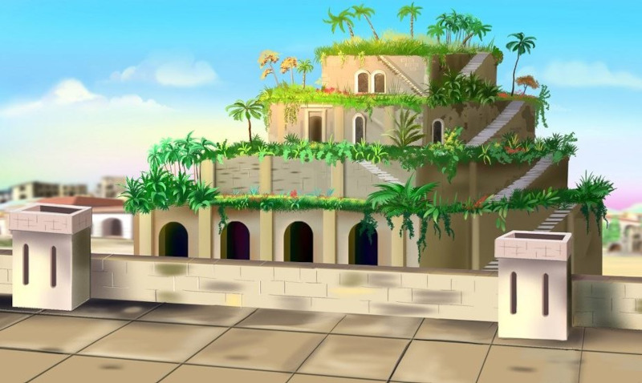
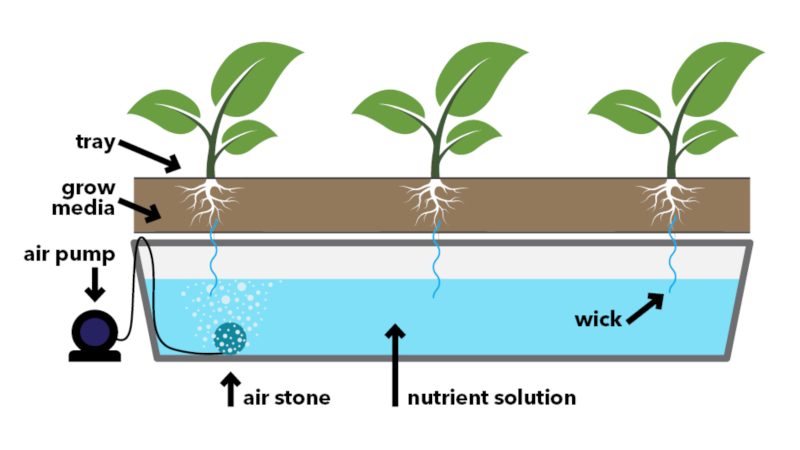
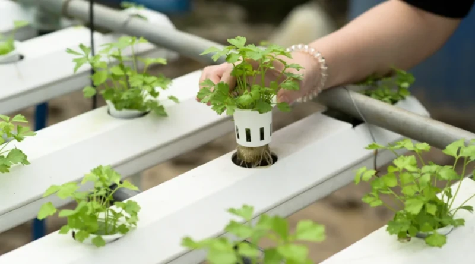
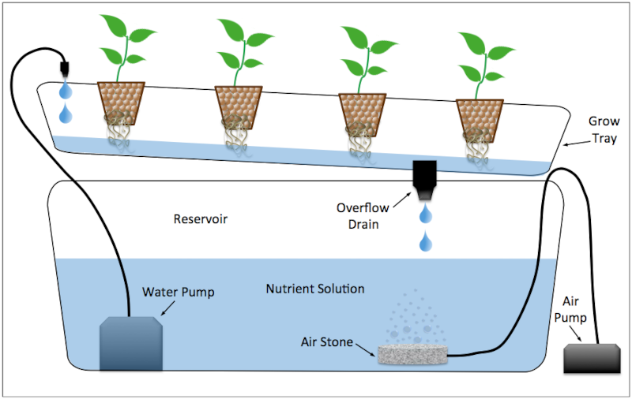
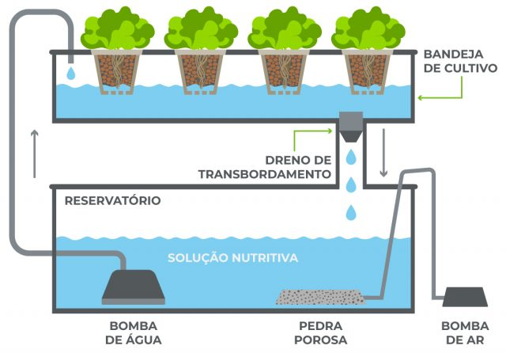

O que é Hisdropónia?
De acordo ao Mateus (1998), a hidroponia é a técnica de cultivar plantas sem a utilização do solo, na qual as raízes recebem uma solução nutritiva balanceada que contém água e todos os nutrientes essenciais ao seu desenvolvimento. Segundo Cometti et al (2019), o termo hidroponia é uma junção de duas palavras, que vêm do grego: hydro e ponos. Assim, o trabalho com água
significa
produzir plantas fora do ambiente do solo.
História da Hidroponia
Segundo Cometti et al (2019), cultivo sem solo, que de certa forma se confunde com a hidroponia, tem precedentes longínquos, com citações de cultivos estabelecidas:
Margens do Rio Nilo no Egito, há 3000 anos, cujos plantios também eram conduzidos em jangadas de juncos com substrato, provavelmente favorecidos pela umidade francamente disponível pelo processo de capilaridade. Jardins Suspensos da Babilônia datando de 605-562 a.C., criados supostamente pelo rei Nabucodonosor em 605 a.C. para presentear sua esposa, a rainha Amyitis, na Mesopotâmia. Esses jardins consistiam em uma estrutura arquitetônica de terraços que continham uma infinidade de espécies de fauna e flora, com substrato trazido de terras distantes.

A partir de meados da década de 1990, várias Escolas Agrotécnicas adotaram o sistema hidropônico NFT como parte do conteúdo programático de horticultura, utilizando casas de cultivo protegido, também chamadas de estufas, contendo sistemas hidropônicos do tipo NFT. Durante os últimos 13 anos, a Escola Agrotécnica Federal de Colatina também vem utilizando a técnica para fins didáticos e produtivos, acrescidos da pesquisa que tem sido realizada desde 2007.
Tipos de Sistemas
Existem vários tipos de sistemas hidropônicos, dos quais, os principais tilizados são:
Sistema de Pavio
Sistema mais simples, passivo, que utiliza um pavio absorvente para transportar a solução nutritiva do reservatório para as raízes por capilaridade. É de baixo custo, sem necessidade de bomba ou eletricidade, sendo indicado para pequenos cultivos ou uso doméstico. Este sistema é estático e limitado para plantas de alta demanda hídrica.

Cultivo em Água Profunda
Neste sistema, as raízes das plantas ficam suspensas em uma solução nutritiva rica em oxigênio. A técnica é uma das mais utilizadas para cultivo de hortaliças de ciclo curto. A oxigenação é geralmente feita com bombas de ar, e esse método também é conhecido como Deep Flow Technique (DFT) ou tecnologia de plataformas flutuantes.

Técnica do Filme de Nutrientes
Criada originalmente pelo Dr. Alen Cooper na Inglaterra, a Técnica de Filme de Nutrientes (NFT) consiste na circulação contínua de uma fina película de solução nutritiva sobre os canais onde as raízes ficam expostas, permitindo acesso constante a nutrientes e oxigênio. É muito usada na produção de hortaliças folhosas.

Fluxo e Refluxo
Sistema ativo que inunda periodicamente o leito de cultivo com a solução nutritiva e depois a drena por gravidade. Isso fornece nutrientes e oxigênio em ciclos regulares, sendo útil para uma ampla gama de plantas.

Cada sistema apresenta vantagens específicas, sendo escolhido conforme o tipo de cultura e os recursos disponíveis.